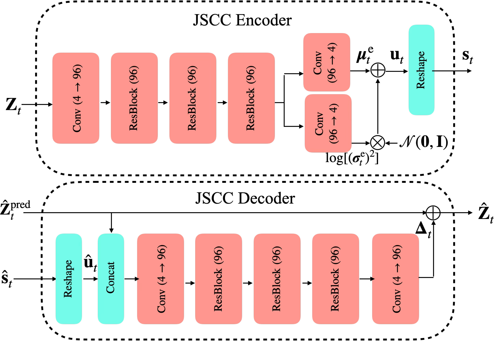

A world model on one side,
a blind encoder on the other.



AWorld model as side information
At the edge server, an action-conditioned world model predicts the latent of the next observation from the previous reconstruction and the actions the robot just executed. It captures most of the scene; what it cannot foresee, such as where a cube really is after a grasp, must come over the channel.
BWyner-Ziv JSCC
A frozen VAE maps the camera images to a spatial latent. A fully-convolutional JSCC encoder that never sees the prediction turns it into a K-channel code sent as analog symbols. The JSCC decoder concatenates the received code with the predicted latent and outputs a correction to the prediction, which the VAE decoder renders for the VLA.
CTraining
We formulate a Wyner-Ziv coding problem and derive a variational upper bound on the Lagrangian that balances the information rate and the reconstruction distortion. Only the JSCC encoder, the side-information network and the JSCC decoder are trained; the VAE, the world model and the VLA stay frozen.